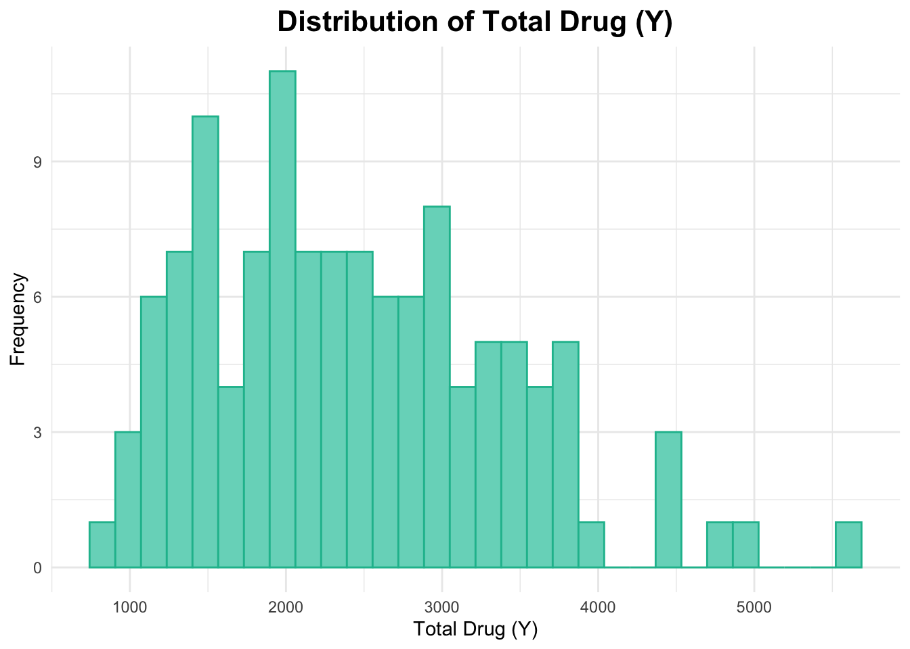
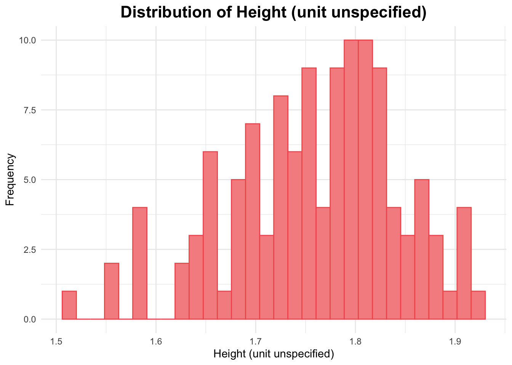
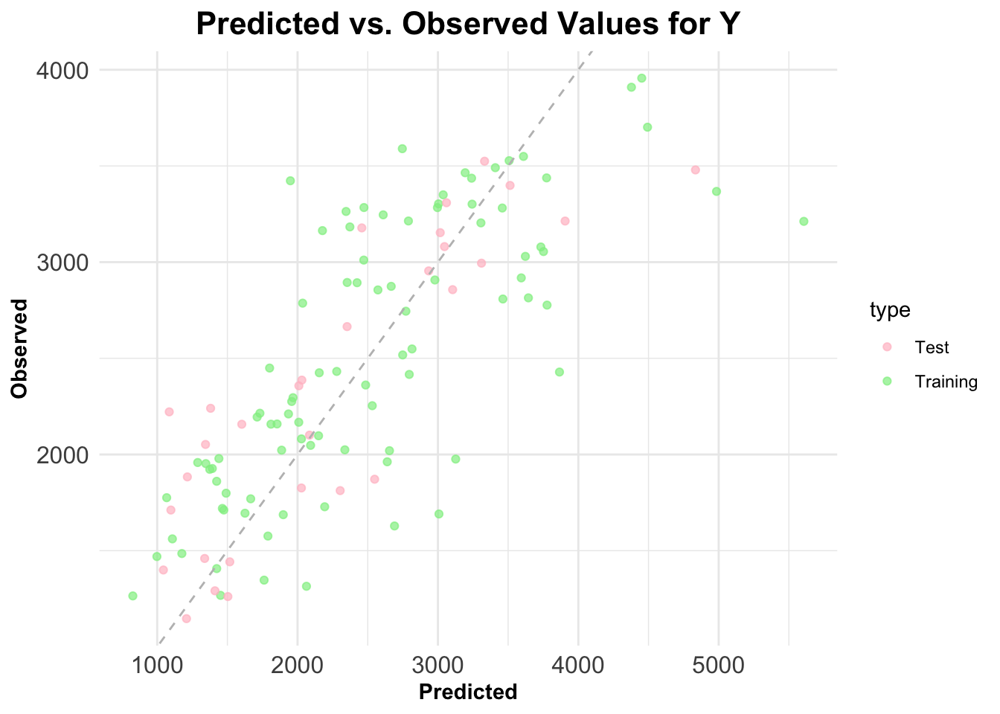

Attaching package: 'kableExtra'
The following object is masked from 'package:dplyr':
group_rows
library(readr)library(here)
here() starts at /Users/nataliecann/Desktop/MADA/nataliecann-MADA-portfolio
library(naniar)library(GGally)
Registered S3 method overwritten by 'GGally':
method from
+.gg ggplot2
library(yardstick)
Attaching package: 'yardstick'
The following object is masked from 'package:readr':
spec
library(caret)
Loading required package: lattice
Attaching package: 'caret'
The following objects are masked from 'package:yardstick':
precision, recall, sensitivity, specificity
The following object is masked from 'package:purrr':
lift
library(workflows)library(parsnip)options(repos =c(CRAN ="https://cran.rstudio.com/")) # including this because I could not render the website without it
Data
The data used in this exercise can be found in the nlmixr2data package. I will download this package and then load it.
install.packages("nlmixr2data") # install package
The downloaded binary packages are in
/var/folders/n7/2hn_592d3db_b95vx1v5wcjr0000gn/T//RtmpDPZrBW/downloaded_packages
library(nlmixr2data) # load package
However, the data can also be found on the github repository linked here: https://github.com/metrumresearchgroup/BayesPBPK-tutorial. Instructions on the class website state to download the “Mavoglurant_A2121_nmpk.csv” file. I will use this method to obtain the data.
I will load in the data in the code chunk below.
data <-read_csv(here("fitting-exercise", "Mavoglurant_A2121_nmpk.csv"))
Rows: 2678 Columns: 17
── Column specification ────────────────────────────────────────────────────────
Delimiter: ","
dbl (17): ID, CMT, EVID, EVI2, MDV, DV, LNDV, AMT, TIME, DOSE, OCC, RATE, AG...
ℹ Use `spec()` to retrieve the full column specification for this data.
ℹ Specify the column types or set `show_col_types = FALSE` to quiet this message.
I will perform several functions to get a quick view of the data.
ID CMT EVID EVI2
Min. :793.0 Min. :1.000 Min. :0.00000 Min. :0.0000
1st Qu.:832.0 1st Qu.:2.000 1st Qu.:0.00000 1st Qu.:0.0000
Median :860.0 Median :2.000 Median :0.00000 Median :0.0000
Mean :858.8 Mean :1.926 Mean :0.07394 Mean :0.1613
3rd Qu.:888.0 3rd Qu.:2.000 3rd Qu.:0.00000 3rd Qu.:0.0000
Max. :915.0 Max. :2.000 Max. :1.00000 Max. :4.0000
MDV DV LNDV AMT
Min. :0.00000 Min. : 0.00 Min. :0.000 Min. : 0.000
1st Qu.:0.00000 1st Qu.: 23.52 1st Qu.:3.158 1st Qu.: 0.000
Median :0.00000 Median : 74.20 Median :4.306 Median : 0.000
Mean :0.09373 Mean : 179.93 Mean :4.085 Mean : 2.763
3rd Qu.:0.00000 3rd Qu.: 283.00 3rd Qu.:5.645 3rd Qu.: 0.000
Max. :1.00000 Max. :1730.00 Max. :7.456 Max. :50.000
TIME DOSE OCC RATE
Min. : 0.000 Min. :25.00 Min. :1.000 Min. : 0.00
1st Qu.: 0.583 1st Qu.:25.00 1st Qu.:1.000 1st Qu.: 0.00
Median : 2.250 Median :37.50 Median :1.000 Median : 0.00
Mean : 5.851 Mean :37.37 Mean :1.378 Mean : 16.55
3rd Qu.: 6.363 3rd Qu.:50.00 3rd Qu.:2.000 3rd Qu.: 0.00
Max. :48.217 Max. :50.00 Max. :2.000 Max. :300.00
AGE SEX RACE WT
Min. :18.0 Min. :1.000 Min. : 1.000 Min. : 56.60
1st Qu.:26.0 1st Qu.:1.000 1st Qu.: 1.000 1st Qu.: 73.30
Median :31.0 Median :1.000 Median : 1.000 Median : 82.60
Mean :32.9 Mean :1.128 Mean : 7.415 Mean : 83.16
3rd Qu.:40.0 3rd Qu.:1.000 3rd Qu.: 2.000 3rd Qu.: 90.60
Max. :50.0 Max. :2.000 Max. :88.000 Max. :115.30
HT
Min. :1.520
1st Qu.:1.710
Median :1.780
Mean :1.762
3rd Qu.:1.820
Max. :1.930
Data Processing and Exploration
Setting Seed for Module 10 exercise:
rngseed =1234
The data does not come with a codebook so I will now use the methods on the class website to try to understand what each variable means.
Variables:
ID: Subject ID CMT: Compartment number EVID: Event ID MDV: Missing DV DV: Dependent Variable, Mavoglurant –> outcome variable AMT: Dose Amount Keyword TIME: Time (hr) DOSE: Dose OCC: Occasion RATE: Rate AGE: Age SEX: Sex WT: Weight HT: Height
This is time-series data of drug-concentrations.
I will check for missingness of the dataset.
gg_miss_var(data)
There is no missing data.
In the code chunk below, I will plot DV (outcome variable, Mavoglurant - the drug) as a function of time and stratified by DOSE with ID as a grouping factor.
# Plotting DV (Mavoglurant concentration) over time, stratified by DOSE, grouped by IDggplot(data, aes(x = TIME, y = DV, group = ID, color =as.factor(DOSE))) +geom_line(alpha =0.6) +# add lines for each subjectgeom_point(alpha =0.6) +# add points for visibilitylabs(title ="Mavoglurant Concentration Over Time Stratified by Dose", # giving graph a titlex ="Time (hours)", # naming x-axisy ="Mavoglurant Concentration (DV)", # naming y-axiscolor ="Dose" ) +theme_minimal() +facet_wrap(~DOSE, scales ="free_y") +# stratify by DOSEscale_color_manual(values =c("#85c1e9", "#f1948a", "#82e0aa")) # adding custom colors!
Now, I will write code that makes a plot with a line for each individual. DV will be on the y-axis while time will be on the x-axis. I will stratify by dose.
# Plot with a line for each individual, stratified by doseggplot(data, aes(x = TIME, y = DV, group = ID, color =as.factor(ID))) +geom_line(alpha =0.6) +# add lines for each individualgeom_point(alpha =0.6) +# add points for visibilitylabs(title ="Mavoglurant Concentration Over Time for Each Individual", # giving graph a titlex ="Time (hours)", # naming x-axisy ="Mavoglurant Concentration (DV)", # naming y-axiscolor ="Individual ID" ) +theme_minimal() +facet_wrap(~DOSE, scales ="free_y") +# stratify by DOSEscale_color_manual(values =rainbow(length(unique(data$ID)))) +# rainbow colors for subjectstheme(legend.position ="none")
The legend for the plot is so large, so I have included it below:
legend_plot <-ggplot(data, aes(x =1, y =1, color =as.factor(ID))) +geom_point(size =2.5) +# Use points to show colorsscale_color_manual(values =rainbow(length(unique(data$ID)))) +labs(color ="Individual ID") +theme_void() +# Remove background and axistheme(legend.position ="bottom", # Position legend at the bottomlegend.key.size =unit(0.3, "cm"), # Reduce legend key sizelegend.text =element_text(size =8), # Reduce text sizelegend.title =element_text(size =9) )legend_plot
It appears that some individuals have received the drug more than once. (OCC=1 and OCC=2)
I will only keep one dataset for each individual and remove all entries with OCC=2 and keep only those with OCC=1.
data_filtered <- data %>%filter(OCC ==1)
Here are a few quick functions to get a look at this new datatset with only OCC=1.
ID CMT EVID EVI2
Min. :793 Min. :1.000 Min. :0.00000 Min. :0.00000
1st Qu.:819 1st Qu.:2.000 1st Qu.:0.00000 1st Qu.:0.00000
Median :849 Median :2.000 Median :0.00000 Median :0.00000
Mean :851 Mean :1.928 Mean :0.07207 Mean :0.07207
3rd Qu.:882 3rd Qu.:2.000 3rd Qu.:0.00000 3rd Qu.:0.00000
Max. :915 Max. :2.000 Max. :1.00000 Max. :1.00000
MDV DV LNDV AMT
Min. :0.0000 Min. : 0.0 Min. :0.000 Min. : 0.000
1st Qu.:0.0000 1st Qu.: 20.5 1st Qu.:3.020 1st Qu.: 0.000
Median :0.0000 Median : 70.3 Median :4.253 Median : 0.000
Mean :0.1027 Mean : 176.2 Mean :4.022 Mean : 2.628
3rd Qu.:0.0000 3rd Qu.: 285.0 3rd Qu.:5.652 3rd Qu.: 0.000
Max. :1.0000 Max. :1550.0 Max. :7.346 Max. :50.000
TIME DOSE OCC RATE AGE
Min. : 0.000 Min. :25.00 Min. :1 Min. : 0.00 Min. :18.00
1st Qu.: 0.533 1st Qu.:25.00 1st Qu.:1 1st Qu.: 0.00 1st Qu.:26.00
Median : 2.250 Median :37.50 Median :1 Median : 0.00 Median :31.00
Mean : 6.430 Mean :36.52 Mean :1 Mean : 15.72 Mean :33.11
3rd Qu.: 8.200 3rd Qu.:50.00 3rd Qu.:1 3rd Qu.: 0.00 3rd Qu.:41.00
Max. :48.217 Max. :50.00 Max. :1 Max. :300.00 Max. :50.00
SEX RACE WT HT
Min. :1.000 Min. : 1.000 Min. : 56.60 Min. :1.520
1st Qu.:1.000 1st Qu.: 1.000 1st Qu.: 73.10 1st Qu.:1.700
Median :1.000 Median : 1.000 Median : 82.10 Median :1.770
Mean :1.136 Mean : 6.985 Mean : 82.36 Mean :1.758
3rd Qu.:1.000 3rd Qu.: 2.000 3rd Qu.: 90.10 3rd Qu.:1.810
Max. :2.000 Max. :88.000 Max. :115.30 Max. :1.930
Note: each individual with time = 0 and DV = 0 also has a non-zero value for AMT.
I will compute the total amount of drug for each individual by adding up all the DV values for each individual. As stated in the instructions, this is not the best approach - it is simply being used for this practice exercise.
I will create code that excludes observations where TIME = 0 and THEN sum the DV varaible for each individual (this will be called “Y”).
data_filtered_2 <- data_filtered %>%filter(TIME !=0) %>%# excluding observations w/ TIME = 0group_by(ID) %>%# grouping by ID dplyr::summarize(Y =sum(DV, na.rm =TRUE)) # instructions state to use dplyr::summarizedim(data_filtered_2)
[1] 120 2
Fortunately, the dimensions are 120 observations and 2 variables.
Now, I will create a data frame containing only observations with TIME = 0.
data_filtered_3 <- data_filtered %>%filter(TIME ==0) # including only rows where TIME = 0dim(data_filtered_3)
[1] 120 17
The dimensions of the tible are 120 observations and 17 variables.
Now I will join together these two data frames using the left_join() function.
data_joined <- data_filtered_3 %>%left_join(data_filtered_2, by ="ID") # join on IDdim(data_joined)
[1] 120 18
This worked as I see that the dimensions are: 120 observations and 18 variables.
I will now write code that converts RACE and SEX to factors.
data_joined <- data_joined %>%mutate(RACE =factor(RACE), # convert RACE to a factorSEX =factor(SEX) # convert SEX to a factor )class(data_joined$RACE) # check if RACE is a factor
[1] "factor"
class(data_joined$SEX) # check if SEX is a factor
[1] "factor"
This worked as I see that both RACE and SEX are now presenting as factors.
I will now write code that only keeps Y, DOSE, AGE, SEX, RACE, WT, and HT as variables.
Here is a summary table of the data (data_joined_filtered).
# Summary Tabledata_joined_filtered %>%summary() %>%kable(caption ="<div style='text-align: center; font-size: 16px; color: black;'><b>Summary of Cleaned Data</b></div>") %>%# adding a centered, bolded title with black font kableExtra::kable_styling(bootstrap_options =c("striped", "hover"), # alternating row colorsfull_width = F ) %>%row_spec(0, background ="#85c1e9") # variable name row specified to be blue
Summary of Cleaned Data
Y
DOSE
AGE
SEX
RACE
WT
HT
Min. : 826.4
Min. :25.00
Min. :18.00
1:104
1 :74
Min. : 56.60
Min. :1.520
1st Qu.:1700.5
1st Qu.:25.00
1st Qu.:26.00
2: 16
2 :36
1st Qu.: 73.17
1st Qu.:1.700
Median :2349.1
Median :37.50
Median :31.00
NA
7 : 2
Median : 82.10
Median :1.770
Mean :2445.4
Mean :36.46
Mean :33.00
NA
88: 8
Mean : 82.55
Mean :1.759
3rd Qu.:3050.2
3rd Qu.:50.00
3rd Qu.:40.25
NA
NA
3rd Qu.: 90.10
3rd Qu.:1.813
Max. :5606.6
Max. :50.00
Max. :50.00
NA
NA
Max. :115.30
Max. :1.930
Now I will make summary tables for each dose.
# Filter for DOSE == 25.00 and create the summary tabledata_joined_filtered %>%filter(DOSE ==25.00) %>%summary() %>%kable(caption ="<div style='text-align: center; font-size: 16px; color: black;'><b>Summary of Cleaned Data for DOSE = 25.00</b></div>") %>%# adding a centered, bolded title with black font kableExtra::kable_styling(bootstrap_options =c("striped", "hover"), # alternating row colorsfull_width = F ) %>%row_spec(0, background ="#f1948a") # variable name row specified to be red
Summary of Cleaned Data for DOSE = 25.00
Y
DOSE
AGE
SEX
RACE
WT
HT
Min. : 826.4
Min. :25
Min. :18.00
1:49
1 :32
Min. : 58.20
Min. :1.560
1st Qu.:1377.5
1st Qu.:25
1st Qu.:26.00
2:10
2 :21
1st Qu.: 72.00
1st Qu.:1.700
Median :1666.1
Median :25
Median :30.00
NA
7 : 1
Median : 80.90
Median :1.770
Mean :1782.7
Mean :25
Mean :32.07
NA
88: 5
Mean : 81.49
Mean :1.759
3rd Qu.:2047.0
3rd Qu.:25
3rd Qu.:40.00
NA
NA
3rd Qu.: 89.50
3rd Qu.:1.820
Max. :3865.8
Max. :25
Max. :49.00
NA
NA
Max. :110.80
Max. :1.910
# Filter for DOSE == 37.50 and create the summary tabledata_joined_filtered %>%filter(DOSE ==37.50) %>%summary() %>%kable(caption ="<div style='text-align: center; font-size: 16px; color: black;'><b>Summary of Cleaned Data for DOSE = 37.50</b></div>") %>%# adding a centered, bolded title with black font kableExtra::kable_styling(bootstrap_options =c("striped", "hover"), # alternating row colorsfull_width = F ) %>%row_spec(0, background ="#82e0aa") # variable name row specified to be green
Summary of Cleaned Data for DOSE = 37.50
Y
DOSE
AGE
SEX
RACE
WT
HT
Min. :1801
Min. :37.5
Min. :19.00
1:10
1 :10
Min. : 64.40
Min. :1.560
1st Qu.:2066
1st Qu.:37.5
1st Qu.:27.50
2: 2
2 : 2
1st Qu.: 72.78
1st Qu.:1.685
Median :2388
Median :37.5
Median :38.00
NA
7 : 0
Median : 80.45
Median :1.745
Mean :2464
Mean :37.5
Mean :36.08
NA
88: 0
Mean : 81.08
Mean :1.748
3rd Qu.:2783
3rd Qu.:37.5
3rd Qu.:43.75
NA
NA
3rd Qu.: 85.58
3rd Qu.:1.815
Max. :3463
Max. :37.5
Max. :50.00
NA
NA
Max. :102.10
Max. :1.910
# Filter for DOSE == 50.00 and create the summary tabledata_joined_filtered %>%filter(DOSE ==50.00) %>%summary() %>%kable(caption ="<div style='text-align: center; font-size: 16px; color: black;'><b>Summary of Cleaned Data for DOSE = 50.00</b></div>") %>%# adding a centered, bolded title with black font kableExtra::kable_styling(bootstrap_options =c("striped", "hover"), # alternating row colorsfull_width = F ) %>%row_spec(0, background ="#f8c471") # variable name row specified to be orange
Summary of Cleaned Data for DOSE = 50.00
Y
DOSE
AGE
SEX
RACE
WT
HT
Min. :1949
Min. :50
Min. :18.00
1:45
1 :32
Min. : 56.6
Min. :1.520
1st Qu.:2610
1st Qu.:50
1st Qu.:26.00
2: 4
2 :13
1st Qu.: 74.9
1st Qu.:1.730
Median :3194
Median :50
Median :32.00
NA
7 : 1
Median : 83.4
Median :1.780
Mean :3239
Mean :50
Mean :33.37
NA
88: 3
Mean : 84.2
Mean :1.762
3rd Qu.:3623
3rd Qu.:50
3rd Qu.:39.00
NA
NA
3rd Qu.: 92.9
3rd Qu.:1.810
Max. :5607
Max. :50
Max. :49.00
NA
NA
Max. :115.3
Max. :1.930
From the tables above, I can compare the summary statistics for each dose. The mean Y (total dv) for those with a dose of 25.0 units (likely mg, but I cannot assume this) is 1782.7; the mean Y for those with a dose of 37.5 units is 2464 units; lastly, the mean Y for those with a dose of 50.0 units is 3239 units. The overall mean Y from the first table is 2445.4 units. The age is relatively similar across dose categories. For dose = 25 units, the mean age is 32.07 years; for dose = 37.5 units, the mean age is 36.08 years; and for dose = 50.0 units, the mean age is 33.37 years old.
Now, I will create a few scatterplots between total drug (Y), which is the outcome, and continuous predictors (such as: AGE, WT, and HT).
Below, I will create a scatterplot for Y and AGE. I will also calculate the correlation coefficient for their relationship.
# Scatterplot of Y and AGEggplot(data_joined_filtered, aes(x = AGE, y = Y)) +geom_point(alpha =0.6, color ="#d7bde2") +# add points and give them a color labs(title ="Total Drug (Y) vs. Age", # titlex ="Age (years)", # naming x-axisy ="Total Drug (Y)"# naming y-axis ) +theme_minimal() +theme(plot.title =element_text(hjust =0.5, # center the titleface ="bold", # make title boldsize =16) # make title bigger )
I will create a scatterplot for Y and HT and calculate the correlation coefficient.
# Scatterplot of Y and AGEggplot(data_joined_filtered, aes(x = HT, y = Y)) +geom_point(alpha =0.6, color ="#ffcdea") +# add points and give them a color labs(title ="Total Drug (Y) vs. HT", # titlex ="Height (unit unspecified)", # naming x-axisy ="Total Drug (Y)"# naming y-axis ) +theme_minimal() +theme(plot.title =element_text(hjust =0.5, # center the titleface ="bold", # make title boldsize =16) # make title bigger )
I will create a scatterplot for Y and WT and calculate the correlation coefficient.
# Scatterplot of Y and AGEggplot(data_joined_filtered, aes(x = WT, y = Y)) +geom_point(alpha =0.6, color ="#f7dc6f") +# add points and give them a color labs(title ="Total Drug (Y) vs. WT", # titlex ="Weight (unit unspecified)", # naming x-axisy ="Total Drug (Y)"# naming y-axis ) +theme_minimal() +theme(plot.title =element_text(hjust =0.5, # center the titleface ="bold", # make title boldsize =16) # make title bigger )
The correlation coefficient between Y and AGE is 0.01256372, between Y and HT is -0.1583297, and between Y and WT is -0.2128719. These are pretty weak relationships.
Now, I will plot the distributions of the continuous variables: Y, AGE, WT, and HT. I will do this by creating histograms.
First, I will create a histogram for Y.
# Histogram of Yggplot(data_joined_filtered, aes(x = Y)) +geom_histogram(fill ="#76d7c4", color ="#1abc9c", bins =30) +# add histogram with custom colorslabs(title ="Distribution of Total Drug (Y)", # titlex ="Total Drug (Y)", # naming x-axisy ="Frequency"# naming y-axis ) +theme_minimal() +theme(plot.title =element_text(hjust =0.5, # center the titleface ="bold", # make title boldsize =16) # make title bigger )

This histogram of Y above appears to be right-skewed.
Next, I will create a histogram for AGE.
# Histogram of AGEggplot(data_joined_filtered, aes(x = AGE)) +geom_histogram(fill ="#ceceff", color ="#a4a4ff", bins =30) +# add histogram with custom colorslabs(title ="Distribution of AGE (years)", # titlex ="Age (years)", # naming x-axisy ="Frequency"# naming y-axis ) +theme_minimal() +theme(plot.title =element_text(hjust =0.5, # center the titleface ="bold", # make title boldsize =16) # make title bigger )
The histogram of AGE appears to be bimodal; one peak is around 27 years while the other is around 37 years old.
Now, I will create a histogram for WT.
# Histogram of WTggplot(data_joined_filtered, aes(x = WT)) +geom_histogram(fill ="#c0f1ff", color ="#74dfff", bins =30) +# add histogram with custom colorslabs(title ="Distribution of Weight (unit unspecified)", # titlex ="Weight (unit unspecified)", # naming x-axisy ="Frequency"# naming y-axis ) +theme_minimal() +theme(plot.title =element_text(hjust =0.5, # center the titleface ="bold", # make title boldsize =16) # make title bigger )
The histogram of weight above appears to be approximately normally distributed for the most part.
Lastly, I will create a histogram for HT.
# Histogram of HTggplot(data_joined_filtered, aes(x = HT)) +geom_histogram(fill ="#f69090", color ="#f15e5e", bins =30) +# add histogram with custom colorslabs(title ="Distribution of Height (unit unspecified)", # titlex ="Height (unit unspecified)", # naming x-axisy ="Frequency"# naming y-axis ) +theme_minimal() +theme(plot.title =element_text(hjust =0.5, # center the titleface ="bold", # make title boldsize =16) # make title bigger )

The histogram above for height appears to be slightly skewed to the right.
I will now create a pairs plot using the GGally package and function ggpairs().
data_joined_filtered %>%select(Y, DOSE, AGE, WT, HT) %>%mutate(DOSE =factor(DOSE, levels =c(25, 37.5, 50))) %>%# Convert DOSE to a factorggpairs(aes(color = DOSE, alpha =0.5), # Set color to be specified by DOSEupper =list(continuous ="points"), # Set the upper plot to show pointslower =list(continuous ="points"), # Set the lower plot to show pointsdiag =list(continuous ="barDiag") # Optionally, use a bar plot for the diagonal )
`stat_bin()` using `bins = 30`. Pick better value with `binwidth`.
`stat_bin()` using `bins = 30`. Pick better value with `binwidth`.
`stat_bin()` using `bins = 30`. Pick better value with `binwidth`.
`stat_bin()` using `bins = 30`. Pick better value with `binwidth`.
`stat_bin()` using `bins = 30`. Pick better value with `binwidth`.
`stat_bin()` using `bins = 30`. Pick better value with `binwidth`.
`stat_bin()` using `bins = 30`. Pick better value with `binwidth`.
`stat_bin()` using `bins = 30`. Pick better value with `binwidth`.
You can see some of the correlation and histograms that I created in EDA steps above within this ggpairs plot. It is good to see the same patterns as above!
Model Fitting
I will now fit a linear model to the outcome (Y) using the main predictor (DOSE).
# Fit a linear model to the outcome (Y) using the main predictor (DOSE)model_dose <-lm(Y ~ DOSE, data = data_joined_filtered)# Summary of the modelsummary(model_dose)
Call:
lm(formula = Y ~ DOSE, data = data_joined_filtered)
Residuals:
Min 1Q Median 3Q Max
-1284.91 -441.14 -97.22 325.84 2372.87
Coefficients:
Estimate Std. Error t value Pr(>|t|)
(Intercept) 323.062 199.049 1.623 0.107
DOSE 58.213 5.194 11.208 <2e-16 ***
---
Signif. codes: 0 '***' 0.001 '**' 0.01 '*' 0.05 '.' 0.1 ' ' 1
Residual standard error: 672.1 on 118 degrees of freedom
Multiple R-squared: 0.5156, Adjusted R-squared: 0.5115
F-statistic: 125.6 on 1 and 118 DF, p-value: < 2.2e-16
The intercept value from the output above is 323.062. This means that when DOSE is 0, the estimated value of Y is 323.062.
The slope for DOSE from the output above is 58.213. This means that for every 1-unit increase in DOSE, Y is expected to increase by 58.213 units. The p-value si smaller than 2e-16, which suggests DOSE is a significant predictor of Y (and has a statistically significant relationship).
Now, I will fit a linear model to the continuous outcome (Y) using all predictors (DOSE, AGE, WT, and HT).
# Fit a linear model to the continuous outcome (Y) using all predictors (DOSE, AGE, WT, and HT)model_all <-lm(Y ~ DOSE + AGE + WT + HT, data = data_joined_filtered)# Summary of the modelsummary(model_all)
Call:
lm(formula = Y ~ DOSE + AGE + WT + HT, data = data_joined_filtered)
Residuals:
Min 1Q Median 3Q Max
-1460.28 -360.42 -92.34 294.22 2405.99
Coefficients:
Estimate Std. Error t value Pr(>|t|)
(Intercept) 2166.9821 1564.3208 1.385 0.1687
DOSE 60.6078 4.8275 12.555 <2e-16 ***
AGE -0.9549 7.5464 -0.127 0.8995
WT -21.8574 6.3463 -3.444 0.0008 ***
HT -54.1797 982.4325 -0.055 0.9561
---
Signif. codes: 0 '***' 0.001 '**' 0.01 '*' 0.05 '.' 0.1 ' ' 1
Residual standard error: 620.2 on 115 degrees of freedom
Multiple R-squared: 0.5981, Adjusted R-squared: 0.5841
F-statistic: 42.78 on 4 and 115 DF, p-value: < 2.2e-16
The intercept value above is 2166.9821. This means that when all independent variables/predictors (DOSE, AGE, WT, HT) are 0, the estimated value of Y is 2166.9821.
The slope for DOSE is 60.6078; meaning that for every 1-unit increase in DOSE, Y is expected to increase by 60.6078 units, assuming the other variables remain constant. The p-value is less than 2e-16, which indicates that DOSE is a significant predictor of Y.
The slope for AGE is -0.9549; meaning that for every 1-unit increase in AGE, Y is expected to decrease by 0.9549 units, assuming the other variables remain constant. The p-value is 0.8995, suggesting AGE is not a statistically significant predictor of Y when accounting for other variables.
The slope for WT is -21.8574; meaning that for every 1-unit increase in WT, Y is expected to decrease by 21.8574 units, assuming the other variables remain constant. The p-value is 0.0008, suggesting WT is a statistically significant predictor of Y when controlling for other variables.
The slope for HT is -54.1797; meaning that for every 1-unit increase in HT, Y is expected to decrease by 54.1797 units, assuming the other variables remain constant. The p-value is 0.9561, suggesting HT is not a statistically significant predictor of Y when controlling for other variables.
For both models above, compute Root Mean Squared Error (RMSE) and R-squared.
# Create a dataframe with actual and predicted values for the model with DOSE as the main predictordata_dose <- data_joined_filtered %>%mutate(predicted_dose =predict(model_dose, newdata = data_joined_filtered))# RMSE and R-squared for the model with DOSE as the main predictorrmse_dose <-rmse(data_dose, truth = Y, estimate = predicted_dose)r_squared_dose <-rsq(data_dose, truth = Y, estimate = predicted_dose)rmse_dose
# A tibble: 1 × 3
.metric .estimator .estimate
<chr> <chr> <dbl>
1 rmse standard 666.
r_squared_dose
# A tibble: 1 × 3
.metric .estimator .estimate
<chr> <chr> <dbl>
1 rsq standard 0.516
# Create a dataframe with actual and predicted values for the model with all predictorsdata_all <- data_joined_filtered %>%mutate(predicted_all =predict(model_all, newdata = data_joined_filtered))# RMSE and R-squared for the model with all predictorsrmse_all <-rmse(data_all, truth = Y, estimate = predicted_all)r_squared_all <-rsq(data_all, truth = Y, estimate = predicted_all)rmse_all
# A tibble: 1 × 3
.metric .estimator .estimate
<chr> <chr> <dbl>
1 rmse standard 607.
r_squared_all
# A tibble: 1 × 3
.metric .estimator .estimate
<chr> <chr> <dbl>
1 rsq standard 0.598
The RMSE for the first model, using DOSE as the main predictor, is 666.4618. This suggests that the model’s predictions deviate from the actual values by approximately 666.4618 units on average. The R-squared value for the first model is 0.5156, meaning that approximately 51.56% of the variance in the dependent variable (Y) can be explained by the DOSE variable alone.
The RMSE for the second model, using DOSE, AGE, WT, and HT as predictors is 607.0941. This suggests that the model’s predictions deviate from the actual values by approximately 607.0941 units on average.
The R-squared value for the second model is 0.5981, meaning that approximately 59.81% of the variance in the dependent variable (Y) can be explained by the combination of DOSE, AGE, WT, and HT.
From the above RMSE and R-squared values, we can state that the model’s performance is improved when we include more predictors. The RMSE for the second model is lower (lower RMSE values are better). Additionally, the R-squared for the second model is higher (higher R-squared values are better).
Now, I will fit a linear model to continuous outcome (Y) using a categorical predictor (SEX).
# Fit a linear model to the continuous outcome (Y) using categorical predictor (SEX)model_sex <-lm(Y ~ SEX, data = data_joined_filtered)# Summary of the modelsummary(model_sex)
Call:
lm(formula = Y ~ SEX, data = data_joined_filtered)
Residuals:
Min 1Q Median 3Q Max
-1651.2 -750.8 -114.6 572.6 3128.9
Coefficients:
Estimate Std. Error t value Pr(>|t|)
(Intercept) 2477.64 94.35 26.261 <2e-16 ***
SEX2 -241.77 258.38 -0.936 0.351
---
Signif. codes: 0 '***' 0.001 '**' 0.01 '*' 0.05 '.' 0.1 ' ' 1
Residual standard error: 962.1 on 118 degrees of freedom
Multiple R-squared: 0.007366, Adjusted R-squared: -0.001047
F-statistic: 0.8756 on 1 and 118 DF, p-value: 0.3513
The intercept value above is 2477.64. This is the prediced value of Y when SEX = 1 (we do not know if 1 represents male or female).
The slope for SEX is -241.77. This represents the change in the outcome variable Y when SEX switches from 1 to 2.
The p-value above is 0.351, which is very high and does not indicate that SEX is a strong predictor of Y.
The RMSE for this model is 954. 0867. This indicates that the model’s predictions deviate from the actual values by approximately 954.09 units on average.
The R-squared value for this model is 0.007365547, meaning that approximately 0.7365547% of the variance in the dependent variable (Y) can be explained by
The RMSE is pretty high and the R-squared value is very low. This suggests that this is not a good model.
Now, I will fit a logistic model to a categorical outcome (SEX) using the main predictor of interest (DOSE).
# Fit a logistic model to SEX using DOSElogistic_model_SEX <-glm(SEX ~ DOSE, data = data_joined_filtered, family = binomial)# Summary of the modelsummary(logistic_model_SEX)
Call:
glm(formula = SEX ~ DOSE, family = binomial, data = data_joined_filtered)
Coefficients:
Estimate Std. Error z value Pr(>|z|)
(Intercept) -0.76482 0.85395 -0.896 0.370
DOSE -0.03175 0.02432 -1.306 0.192
(Dispersion parameter for binomial family taken to be 1)
Null deviance: 94.242 on 119 degrees of freedom
Residual deviance: 92.431 on 118 degrees of freedom
AIC: 96.431
Number of Fisher Scoring iterations: 5
The intercept from the output above is -0.76482. This indicates that the log-odds of the outcome SEX is -0.76482 when DOSE is zero.
The slope for DOSE is -0.03175. This suggests that for each additional unit of DOSE, the log-odds of the outcome decrease by 0.03175.
The p-value is 0.192, indicating that DOSE is not statistically significant in predicting SEX when the significance level is equal to 0.05.
Now, I will fit a logistic model to a categorical outcome (SEX) using all predictors (DOSE, AGE, WT, and HT).
# Fit a logistic model to SEX using all predictors (DOSE, AGE, WT, HT)logistic_model_all <-glm(SEX ~ DOSE + AGE + WT + HT, data = data_joined_filtered, family = binomial)# Summary of the modelsummary(logistic_model_all)
Call:
glm(formula = SEX ~ DOSE + AGE + WT + HT, family = binomial,
data = data_joined_filtered)
Coefficients:
Estimate Std. Error z value Pr(>|z|)
(Intercept) 51.18213 15.81456 3.236 0.00121 **
DOSE -0.08433 0.04572 -1.844 0.06514 .
AGE 0.10493 0.05720 1.834 0.06659 .
WT -0.01979 0.05731 -0.345 0.72991
HT -30.91218 10.03679 -3.080 0.00207 **
---
Signif. codes: 0 '***' 0.001 '**' 0.01 '*' 0.05 '.' 0.1 ' ' 1
(Dispersion parameter for binomial family taken to be 1)
Null deviance: 94.242 on 119 degrees of freedom
Residual deviance: 36.735 on 115 degrees of freedom
AIC: 46.735
Number of Fisher Scoring iterations: 7
The intercept is shown to be 51.18213. This represents the log-odds of SEX when all predictors in the model are equal to 0.
The slope for DOSE is -0.08433. This suggests that for each one-unit increase in DOSE, the log-odds of being in the reference category of SEX (SEX = 1), decrease by 0.08433. The p-value is 0.06514, which indicates that DOSE is not a statistically strong predictor of SEX.
The slope for AGE is 0.10493. This suggests that for each one-unit increase in AGE, the log-odds of having SEX = 1, increase by 0.10493. The p-value is 0.06659, which indicates that AGE is not a strong predictor of SEX.
The slope for WT is -0.01979. This suggests that for each one-unit increase in WT, the log-odds of having SEX = 1, decrease by 0.01979. The p-value is 0.72991, which indicates that WT is not a strong predictor of SEX. This is the largest p-value out of all the predictors.
The slope for HT is -0.03091. This suggests that for each one-unit increase in HT, the log-odds of having SEX = 1, decrease by 0.03091. The p-value is 0.00207, which indicates that HT is a strong predictor of SEX.
For both models above, I will compute accuracy and Receiver Operating Characteristic Area Under the Curve (ROC-AUC). I have never calculated accuracy and ROC-AUC before, so I consulted AI for help on getting started.
# Convert actual and predicted values to factorsdata_results <- data_joined_filtered %>%mutate(pred_SEX =predict(logistic_model_SEX, type ="response"),pred_all =predict(logistic_model_all, type ="response"),pred_SEX_binary =factor(ifelse(pred_SEX >0.5, "1", "0"), levels =c("0", "1")),pred_all_binary =factor(ifelse(pred_all >0.5, "1", "0"), levels =c("0", "1")),SEX =factor(SEX, levels =c("0", "1")) # Ensure SEX is a factor )# Accuracy calculation using yardstickaccuracy_SEX <-accuracy(data_results, truth = SEX, estimate = pred_SEX_binary)accuracy_all <-accuracy(data_results, truth = SEX, estimate = pred_all_binary)accuracy_SEX # Print accuracy for first model
# ROC AUC calculation using yardstick (pass predictor column directly, no "estimate =")auc_SEX <-roc_auc(data_results, truth = SEX, pred_SEX, event_level ="second")
Warning: No control observations were detected in `truth` with control level
'0'.
auc_all <-roc_auc(data_results, truth = SEX, pred_all, event_level ="second")
Warning: No control observations were detected in `truth` with control level
'0'.
auc_SEX # Print AUC for first model
# A tibble: 1 × 3
.metric .estimator .estimate
<chr> <chr> <dbl>
1 roc_auc binary NA
auc_all # Print AUC for second model
# A tibble: 1 × 3
.metric .estimator .estimate
<chr> <chr> <dbl>
1 roc_auc binary NA
# I couldn't get the yardstick ROC AUC function to work, so I will use the method below: library(pROC)
Type 'citation("pROC")' for a citation.
Attaching package: 'pROC'
The following objects are masked from 'package:stats':
cov, smooth, var
# predictions for both modelspred_SEX <-predict(logistic_model_SEX, type ="response")pred_all <-predict(logistic_model_all, type ="response")# convert predictions to binary (0/1) based on a 0.5 thresholdpred_SEX_binary <-ifelse(pred_SEX >0.5, 1, 0)pred_all_binary <-ifelse(pred_all >0.5, 1, 0)# cctual values for SEX (binary 0/1)actual <- data_joined_filtered$SEXroc_SEX <-roc(actual, pred_SEX)
Setting levels: control = 1, case = 2
Setting direction: controls < cases
roc_all <-roc(actual, pred_all)
Setting levels: control = 1, case = 2
Setting direction: controls < cases
# AUC for both modelsauc_SEX <-auc(roc_SEX)auc_all <-auc(roc_all)auc_SEX # print AUC for first model
Area under the curve: 0.5919
auc_all # print AUC for second model
Area under the curve: 0.9621
The first model, simply using DOSE as a predictor, has an accuracy of 0. The second model, using all predictors (DOSE, AGE, WT, HT), has an accuracy of 0.009615385.
THe first model has an AUC of 0.5919, which suggests that the model is not that great, as an AUC of 0.5 is indicative of “random guessing.” The second model has an AUC of 0.9621, which is very close to 1.0, which is the best value for AUC. This suggests that including more predictors improves the model’s performance significantly.
I will attempt a k-nearest neighbors model to fit the continuous outcome Y. I have not done this, so I will consult AI for help (for the code and interpretation).
library(caret)# Prepare the data (assuming data is already loaded and clean)# For simplicity, let's use all predictorstrain_data_continuous <- data_joined_filtered %>%select(Y, DOSE, AGE, WT, HT) # Assuming these columns are predictors# Train a KNN model for continuous Yknn_model_continuous <-train(Y ~ ., data = train_data_continuous, method ="knn", tuneLength =10)# Print the model resultsknn_model_continuous
k-Nearest Neighbors
120 samples
4 predictor
No pre-processing
Resampling: Bootstrapped (25 reps)
Summary of sample sizes: 120, 120, 120, 120, 120, 120, ...
Resampling results across tuning parameters:
k RMSE Rsquared MAE
5 743.1179 0.4456853 573.5414
7 715.5882 0.4760053 553.4720
9 685.0205 0.5105298 529.5252
11 671.8827 0.5227416 518.8879
13 657.3583 0.5408937 509.5288
15 654.4251 0.5447018 507.6123
17 650.3378 0.5495376 506.2350
19 647.7359 0.5546348 503.3721
21 647.8614 0.5546128 501.3653
23 645.7857 0.5579418 499.1903
RMSE was used to select the optimal model using the smallest value.
The final value used for the model was k = 23.
k = 23 has the lowest RMSE, 698.5967. Therefore, on average, the model’s predictions are approximately 698.5967 units off from the actual values. k = 23 also has the highest R-squared value, of 0.5056991 (which is truly not that high at all). This means that roughly 50.5056991% of the variance in Y can be explained by the model. k = 23 has a Mean Absolute Error (MAE) of 527.1237; indicating that the model’s predictions deviate by roughly 527.1237 units from the actual values.
I will attempt a k-nearest neighbors model to fit the categorical outcome SEX.
# Prepare the data (categorical outcome SEX)train_data_categorical <- data_joined_filtered %>%select(SEX, DOSE, AGE, WT, HT)# Train a KNN model for categorical SEXknn_model_categorical <-train(SEX ~ ., data = train_data_categorical, method ="knn", tuneLength =10)# Print the model resultsknn_model_categorical
k-Nearest Neighbors
120 samples
4 predictor
2 classes: '1', '2'
No pre-processing
Resampling: Bootstrapped (25 reps)
Summary of sample sizes: 120, 120, 120, 120, 120, 120, ...
Resampling results across tuning parameters:
k Accuracy Kappa
5 0.8459553 0.208231820
7 0.8537939 0.193012255
9 0.8497230 0.158027963
11 0.8553246 0.109302095
13 0.8612985 0.103762917
15 0.8684224 0.094455331
17 0.8596239 0.031815437
19 0.8678849 0.043144525
21 0.8681432 -0.004106408
23 0.8733454 0.004442708
Accuracy was used to select the optimal model using the largest value.
The final value used for the model was k = 23.
The highest accuracy, 0.8557523, is for k = 21. This means the model accurately predicted SEX roughly 85.57523% of the time. The kappa value measures the agreement betwen the actual and predicted classes (in this case, SEX). The kappa for k = 21 is 0.022910974; this indicates low agreement between actual and predicted SEX beyond chance. It appears as though this model is not performing well.
Module 10 Part One
Setting seed for reproducibility: rngseed = 1234
rngseed =1234
I will now remove RACE from the dataset since it has oddly coded values.
data_10 <- data_joined_filtered %>%select(-RACE)colnames(data_10) # checking to make sure that RACE was dropped
[1] "Y" "DOSE" "AGE" "SEX" "WT" "HT"
dim(data_10)
[1] 120 6
The dimensions appear to be correct since we have 120 columns and 6 variables.
Setting seed specified above:
set.seed(rngseed)
Now, I will split the data randomly into a 75% train (3/4) and 25% test set (1/4). I will use https://www.tidymodels.org/start/recipes/ as a reference for how to do this.
# putting 3/4 of data into the training setdata_split <-initial_split(data_10, prop =3/4)# creating train and test data framestrain_data <-training(data_split)test_data <-testing(data_split)
Modeling Fitting
Setting seed specified above:
set.seed(rngseed)
I will now fit two linear models to Y (the continuous outcome of interest). I will use only the training data for this.
First model: Y ~ DOSE (only DOSE as predictor)
model_dose_10 <-lm(Y ~ DOSE, data = train_data)summary(model_dose_10)
Call:
lm(formula = Y ~ DOSE, data = train_data)
Residuals:
Min 1Q Median 3Q Max
-1257.85 -492.00 -71.31 370.71 2399.93
Coefficients:
Estimate Std. Error t value Pr(>|t|)
(Intercept) 535.455 244.017 2.194 0.0308 *
DOSE 53.424 6.286 8.499 4.41e-13 ***
---
Signif. codes: 0 '***' 0.001 '**' 0.01 '*' 0.05 '.' 0.1 ' ' 1
Residual standard error: 710.7 on 88 degrees of freedom
Multiple R-squared: 0.4508, Adjusted R-squared: 0.4446
F-statistic: 72.23 on 1 and 88 DF, p-value: 4.406e-13
The intercept is 535.455. This means that when DOSE is 0, the estimated value of Y is 535.455. (P = 0.0308) –> statistically significant
The slope for DOSE is 53.424. This means that for every 1-unit increase in DOSE, Y is expected to increase by 53.424 units. The p-value is less than 4.41e-13, which indicates that DOSE is a significant predictor of Y.
RMSE = 710.7
Second model: Y ~ DOSE + AGE + WT + HT (all predictors)
model_all_10 <-lm(Y ~ DOSE + AGE + WT + HT, data = train_data)summary(model_all_10)
Call:
lm(formula = Y ~ DOSE + AGE + WT + HT, data = train_data)
Residuals:
Min 1Q Median 3Q Max
-1423.3 -390.9 -190.4 407.1 2412.1
Coefficients:
Estimate Std. Error t value Pr(>|t|)
(Intercept) 2192.480 1899.054 1.155 0.25153
DOSE 56.493 5.903 9.570 3.79e-15 ***
AGE -5.621 9.296 -0.605 0.54698
WT -23.204 7.777 -2.984 0.00372 **
HT 185.838 1207.909 0.154 0.87809
---
Signif. codes: 0 '***' 0.001 '**' 0.01 '*' 0.05 '.' 0.1 ' ' 1
Residual standard error: 660.7 on 85 degrees of freedom
Multiple R-squared: 0.5416, Adjusted R-squared: 0.52
F-statistic: 25.1 on 4 and 85 DF, p-value: 9.657e-14
The intercept is 2192.480. This means that when DOSE, AGE, WT, and HT are 0, the estimated value of Y is 2192.480 (P = 0.25153) –> not statistically significant
The slope for DOSE is 56.493. This means that for every 1-unit increase in DOSE, Y is expected to increase by 56.493 units. The p-value is 3.79e-15, which indicates that DOSE is a significant predictor of Y.
The slope for AGE is -5.621. This means that for every 1-unit increase in AGE, Y is expected to decrease by 5.621 units. The p-value is 0.54698, which indicates that AGE is not significant predictor of Y.
The slope for WT is -23.204. This means that for every 1-unit increase in WT, Y is expected to decrease by 23.204 units. The p-value is 0.000372, which indicates that WT is a significant predictor of Y.
The slope for HT is 185.838. This means that for every 1-unit increase in HT, Y is expected to increase by 185.838 units. The p-value is 0.87809, which indicates that HT is not a significant predictor of Y.
RMSE = 660.7
From the RMSEs above, we can see that the second model’s is smaller (660.7) than the first model’s (710.7). This suggests that the second model’s predictions deviate less from the actual values on average – indicating that the second model may be better.
Model Performance Assessment 1
Setting seed specified above:
set.seed(rngseed)
Now, as per class instructions, I will run predictions for both models.
set.seed(rngseed)# DOSE modellm_dose <-linear_reg() %>%set_engine("lm") %>%set_mode("regression")lm_dose_workflow <-workflow() %>%add_model(lm_dose) %>%add_formula(Y ~ DOSE)# ALL modellm_all <-linear_reg() %>%set_engine("lm") %>%set_mode("regression")lm_all_workflow <-workflow() %>%add_model(lm_all) %>%add_formula(Y ~ .) # period includes all predictors# fit models to train datalm_dose_fit <- lm_dose_workflow %>%fit(train_data)lm_all_fit <- lm_all_workflow %>%fit(train_data)# predictions with train datapreds_dose <-predict(lm_dose_fit, train_data) %>%bind_cols(train_data)preds_all <-predict(lm_all_fit, train_data) %>%bind_cols(train_data)# RMSE for both modelsrmse_dose <-rmse(preds_dose, truth = Y, estimate = .pred)rmse_dose
# A tibble: 1 × 3
.metric .estimator .estimate
<chr> <chr> <dbl>
1 rmse standard 703.
rmse_all <-rmse(preds_all, truth = Y, estimate = .pred)rmse_all
# A tibble: 1 × 3
.metric .estimator .estimate
<chr> <chr> <dbl>
1 rmse standard 627.
The mean RMSE value for the prediction model containing simply DOSE is 702.8078. The mean RMSE value for the prediction model containing all predictors (DOSE, AGE, WT, HT) is 627.4408.
Next, I will compute RMSE for a null model (with no predictors).
# compute the mean of Y (null model prediction)mean_Y <-mean(train_data$Y)# null model predictions (just the mean for all observations)pred_null <-rep(mean_Y, length(train_data$Y))# RMSErmse_null <-sqrt(mean((train_data$Y - pred_null)^2))rmse_null
[1] 948.3526
The null model mean RMSE is 948.3526.
The ALL predictors prediction model had a mean RMSE of 627.4408, which is the lowest RMSE value. This indicates that it performs the best out of the three models. The DOSE predictor prediction model had an mean RMSE of 702.8078. The null predictor prediction model had a mean RMSE of 948.3526, which suggests it performs the worst.
Model Performance Assessment 2
I will perform a 10-fold cross-validation using https://www.tidymodels.org/start/resampling/ as a reference.
set.seed(rngseed) # set seed for reproducibility cv_folds <-vfold_cv(train_data, v =10) # specify 10 folds for cross-validation
Below, I will set-up the modeling process for the DOSE model.
# set up linear regression model for the DOSE predictor modellm_dose <-linear_reg() %>%set_engine("lm") %>%set_mode("regression")# set up workflow for the DOSE predictor modeldose_workflow <-workflow() %>%add_model(lm_dose) %>%add_formula(Y ~ DOSE)set.seed(rngseed) # set seed for reproducibilitydose_fit_rs <- dose_workflow %>%fit_resamples(cv_folds)dose_metrics <-collect_metrics(dose_fit_rs) # mean RMSE of 10 foldsdose_metrics
# A tibble: 2 × 6
.metric .estimator mean n std_err .config
<chr> <chr> <dbl> <int> <dbl> <chr>
1 rmse standard 691. 10 67.5 Preprocessor1_Model1
2 rsq standard 0.512 10 0.0592 Preprocessor1_Model1
The mean RMSE is 690.5397 and the rsq is 0.5117.
Now, I will do so for the ALL predictors model.
# set up linear regression model for the ALL predictors modellm_all <-linear_reg() %>%set_engine("lm") %>%set_mode("regression")# set up workflow for the ALL predictors modelall_workflow <-workflow() %>%add_model(lm_all) %>%add_formula(Y ~ DOSE + AGE + WT + HT)set.seed(rngseed) # set seed for reproducibilityall_fit_rs <- all_workflow %>%fit_resamples(cv_folds)all_metrics <-collect_metrics(all_fit_rs) # mean RMSE of 10 foldsall_metrics
# A tibble: 2 × 6
.metric .estimator mean n std_err .config
<chr> <chr> <dbl> <int> <dbl> <chr>
1 rmse standard 663. 10 58.2 Preprocessor1_Model1
2 rsq standard 0.578 10 0.0769 Preprocessor1_Model1
The mean RMSE is 663.0291 and the rsq is 0.5775.
We see that the ALL predictors model has the lower mean RMSE (663.0291) and the higher r-squared value (0.5775). This suggests that this model is better at predicting Y. The DOSE model has a higher mean RMSE (690.5397) and a lower r-squared value (0.5117).
Now, I will do this for the null model.
# null model within cross-validationnull_model_rmse <-function(split, data) {# Get the training data for this fold train_fold <-training(split)# Compute the mean of Y in the training data for this fold mean_Y_fold <-mean(train_fold$Y)# Create predictions for the fold (just the mean of Y) pred_null_fold <-rep(mean_Y_fold, nrow(training(split)))# Calculate RMSE for this fold rmse_null_fold <-sqrt(mean((train_fold$Y - pred_null_fold)^2))return(rmse_null_fold)}# apply the null model RMSE function to the 10 foldscv_null_rmse <-vfold_cv(train_data, v =10) %>%mutate(rmse =map_dbl(splits, null_model_rmse, data = train_data))# mean RMSE for the null model across foldsmean(cv_null_rmse$rmse)
[1] 947.302
# standard error for RMSE for null modelnull_rmse_se <-sd(cv_null_rmse$rmse) /sqrt(length(cv_null_rmse$rmse))null_rmse_se
[1] 8.092121
The mean RMSE for the ALL predictors model for assessment 1 was 627.4408, while it 663.0291 for assessment 2. This means that the mean RMSE for the ALL predictors model increased by 663.0291-627.4408=35.5883 units (or poitns). The mean RMSE for the DOSE predictor model for assessment 1 was 702.8078, while it was 690.5397 for assessment 2. The means that the mean RMSE for the DOSE predictor model decreased by 702.8078-690.5397=12.2681 units (or points).The mean RMSE for the null model was 948.3526 for assessment 1 and was 947.302 for assessment 2. Therefore, there was not a significant change here.
The mean standard error of RMSE for the DOSE model is 67.49509. The mean standard error of RMSE for the ALL predictors model is 58.22321. The mean standard error of RMSE for the null model is 7.085889.
Now, I will run this code again however, I will choose a different value for the random seed.
# different random seed for reproducibilityset.seed(54321) # Use a different seed value for this runcv_folds_new <-vfold_cv(train_data, v =10) # specify 10 folds for cross-validation# DOSEset.seed(54321)# set up linear regression model for the DOSE predictor modellm_dose_new <-linear_reg() %>%set_engine("lm") %>%set_mode("regression")# set up workflow for the DOSE predictor modeldose_workflow_new <-workflow() %>%add_model(lm_dose_new) %>%add_formula(Y ~ DOSE)set.seed(54321)dose_fit_rs_new <- dose_workflow_new %>%fit_resamples(cv_folds_new)dose_metrics_new <-collect_metrics(dose_fit_rs_new) # mean RMSE of 10 foldsdose_metrics_new
# A tibble: 2 × 6
.metric .estimator mean n std_err .config
<chr> <chr> <dbl> <int> <dbl> <chr>
1 rmse standard 696. 10 57.8 Preprocessor1_Model1
2 rsq standard 0.459 10 0.0588 Preprocessor1_Model1
# ALLset.seed(54321)# set up linear regression model for the ALL predictors modellm_all_new <-linear_reg() %>%set_engine("lm") %>%set_mode("regression")# set up workflow for the ALL predictors modelall_workflow_new <-workflow() %>%add_model(lm_all_new) %>%add_formula(Y ~ DOSE + AGE + WT + HT)set.seed(54321)all_fit_rs_new <- all_workflow_new %>%fit_resamples(cv_folds_new)all_metrics_new <-collect_metrics(all_fit_rs_new) # mean RMSE of 10 foldsall_metrics_new
# A tibble: 2 × 6
.metric .estimator mean n std_err .config
<chr> <chr> <dbl> <int> <dbl> <chr>
1 rmse standard 650. 10 57.0 Preprocessor1_Model1
2 rsq standard 0.542 10 0.0605 Preprocessor1_Model1
# nullset.seed(54321)# null model within cross-validationnull_model_rmse_new <-function(split, data) {# Get the training data for this fold train_fold <-training(split)# Compute the mean of Y in the training data for this fold mean_Y_fold <-mean(train_fold$Y)# Create predictions for the fold (just the mean of Y) pred_null_fold <-rep(mean_Y_fold, nrow(training(split)))# Calculate RMSE for this fold rmse_null_fold <-sqrt(mean((train_fold$Y - pred_null_fold)^2))return(rmse_null_fold)}# apply the null model RMSE function to the 10 foldscv_null_rmse_new <-vfold_cv(train_data, v =10) %>%mutate(rmse =map_dbl(splits, null_model_rmse_new, data = train_data))# mean RMSE for the null model across foldsmean_RMSE_null <-mean(cv_null_rmse_new$rmse)mean_RMSE_null
[1] 947.0423
# standard error for RMSE for null modelnull_rmse_se_new <-sd(cv_null_rmse_new$rmse) /sqrt(length(cv_null_rmse$rmse))null_rmse_se_new
[1] 8.094641
After changing the seed to 54321, the mean RMSE for the DOSE model is 695.9589, and its R-squared value is 0.4589. The mean SE(RMSE) is 57.77. The mean RMSE for the ALL predictors model is 650.2721, and its R-squared value is 0.5417. The mean SE(RMSE) is 57.05. The mean RMSE for the null model is 947.0423, while the mean SE(RMSE) is 8.094641.
Module 10 Part 2: This section added by Rayleen Lewis
First, I will combine all predicted values from the 3 models (null, dose only, and all predictors).
#I'm appending the observed values to the vector with the null values and adding a column to indicate modelpred_null_rl <-as_tibble(cbind(pred_null,preds_dose$Y)) %>%mutate(model ="Null") %>%rename(.pred = pred_null, Y = V2)
Warning: The `x` argument of `as_tibble.matrix()` must have unique column names if
`.name_repair` is omitted as of tibble 2.0.0.
ℹ Using compatibility `.name_repair`.
#Restricting dose model results to predictions and observed Y, adding column for modelpred_dose_rl <- preds_dose %>%select(.pred, Y) %>%mutate(model ="Dose only")#Restricting dose model results to predictions and observed Y, adding column for modelpred_all_rl <- preds_all %>%select(.pred, Y) %>%mutate(model ="All predictors")#Combining all predictions into one datasetcombined_preds <-rbind(pred_null_rl, pred_dose_rl, pred_all_rl)
Now that all predicted values for the 3 models are combined into one dataset. Below are figures graphing the predicted values by the observed values. This is done in two ways, first with all models on the same graph and second with each model in its own facet. It is easier to see model differences in the figure using facets.
# Create the plotggplot(combined_preds, aes(x = Y, y = .pred, color = model, shape = model)) +geom_point(alpha =0.7, size =2) +# Scatter plot with transparencygeom_abline(slope =1, intercept =0, linetype ="dashed", color ="black") +# 45-degree linescale_x_continuous(limits =c(0, 5000)) +# Set x-axis limitsscale_y_continuous(limits =c(0, 5000)) +# Set y-axis limitstheme_minimal() +# Use a minimal themelabs(title ="Observed vs. Predicted Values",x ="Observed Values",y ="Predicted Values",color ="Model",shape ="Model")
Warning: Removed 3 rows containing missing values or values outside the scale range
(`geom_point()`).
# Create the plot with facetsggplot(combined_preds, aes(x = Y, y = .pred, color = model)) +geom_point(alpha =0.7, size =2) +# Scatter plot with transparencygeom_abline(slope =1, intercept =0, linetype ="dashed", color ="black") +# 45-degree linescale_x_continuous(limits =c(0, 5000)) +# Set x-axis limitsscale_y_continuous(limits =c(0, 5000)) +# Set y-axis limitstheme_minimal() +# Use a minimal themelabs(title ="Observed vs. Predicted Values",x ="Observed Values",y ="Predicted Values") +facet_wrap(~model) # Create facets for each model
Warning: Removed 3 rows containing missing values or values outside the scale range
(`geom_point()`).
Why are the 3 horizontal lines for the dose only model? The mean predicted value will be the same for all observations with the same dose value when dose is the only predictor in the model. Because there are only 3 values for dose, we see 3 lines of predicted values as expected.
Next, I will look at the residuals for model 2, which is the best fitting model of the 3.
#Calculating the residualpreds_all_res <- preds_all %>%mutate(all_resid = .pred - Y)# Create the plot of predicted and residualsggplot(preds_all_res, aes(x = .pred, y = all_resid)) +geom_point() +# Scatter plot geom_abline(slope =0, intercept =0, linetype ="solid", color ="black") +# line at 0scale_y_continuous(limits =c(-3000, 3000)) +# Set y-axis limitstheme_minimal() +# Use a minimal themelabs(title ="Predicted vs. residuals",x ="Predicted Values",y ="Residuals")
As noted in the course materials, negative residuals are larger than positive residuals.
Next, I’ll take 100 bootstrap samples from the training data. For each sample, I’ll run a linear regression model using all variables as predictors and extract the predicted value. I’ll get the median and 89% CI of the predictions from the bootstrap samples for each point.
set.seed(rngseed) # set seed for reproducibility# Create 100 bootstraps from train_databootstraps_data <-bootstraps(train_data, times =100)# Define a linear modellm_model_bs <-linear_reg() %>%set_engine("lm") %>%set_mode("regression")# Fit the model to each bootstrap sample and make predictionsbootstrap_predictions <-map(bootstraps_data$splits, function(split) { model_bs_fit <- lm_model_bs %>%fit(Y ~ ., data =analysis(split)) predictions_bs <-predict(model_bs_fit, new_data = train_data) %>%mutate(bootstrap_id =as.character(split$id))return(predictions_bs)})# Convert bootstrap predictions into a matrix with 100 columns and 90 rows (each data point has its own row)pred_bs <-do.call(cbind, lapply(bootstrap_predictions, function(df) df$.pred)) %>%t()# Compute median and 89% confidence intervalspreds <- pred_bs |>apply(2, quantile, c(0.055, 0.5, 0.945)) |>t()# Combine all predictions into a single dataframebootstrap_predictions_df <-bind_rows(bootstrap_predictions, .id ="bootstrap")# Combine original predictions with bootstrap resultspred_summary <-tibble(Y = preds_all$Y,point_estimate = preds_all$.pred,lower_bound = preds[, 1],median = preds[, 2],upper_bound = preds[, 3])# Create plot for original predictions with confidence intervalsggplot(pred_summary, aes(x = Y)) +geom_point(aes(y = median, color ="Median"), size =3,) +#Median predicted valuegeom_point(aes(y = point_estimate, color ="Mean"), size =2, shape =18) +#Mean predicted value from model without bootstrapgeom_errorbar(aes(ymin = lower_bound, ymax = upper_bound, color ="89% CI"), width =0.1) +geom_abline(slope =1, intercept =0, linetype ="dashed", color ="black") +scale_x_continuous(limits =c(0, 5000)) +# Set x-axis limitsscale_y_continuous(limits =c(0, 5000)) +# Set y-axis limitstheme_minimal() +# Use a minimal themelabs(title ="Observed vs. Predicted with Confidence Intervals",x ="Observed Values",y ="Predicted Values",color ="Legend") +scale_color_manual(values =c("Mean"="orange", "Median"="blue", "89% CI"="red"))
Warning: Removed 1 row containing missing values or values outside the scale range
(`geom_point()`).
Removed 1 row containing missing values or values outside the scale range
(`geom_point()`).
Based on the figure above, for most observed values, the mean predicted (from original model) and median predicted values (from bootstrap samples) are very similar as noted with the orange diamonds nearly always falling within the blue circles. There is variability in the uncertainly of the predictions (89% CIs vary in width). Another important point to note is that for a lot of the points, the 89% CI does not cross the dashed black line. All CIs crossing this line, especially if the CIs are narrow, would indicate better fit. The model also appears to be systematically underestimating Y at higher levels of observed Y (i.e., estimates fall below the dashed line for high observed values of Y).
Module 10 Part Three
I will now use the fit of model 2 (all predictors) using the training data to make predictions for the test data. This will provide an indication of how well the model generalizes to data that wasn’t used to train the model.
# assigning to object called "model2" for simplicitymodel2 <-lm(Y ~ ., data = train_data)# use the fitted model (model 2) to make predictions on the test datatest_preds <-predict(model2, newdata = test_data)
Now, I will make a plot to showcase predicted vs. observed values for the training data. In this same plot, I will also showcase the predicted vs. observed values for the test data.
# create dataframes (test and train) for plottingtrain_plot <-data.frame(observed = train_data$Y,predicted =predict(model2, newdata = train_data),type ="Training")test_plot <-data.frame(observed = test_data$Y,predicted = test_preds,type ="Test")# combine training and test data into a single dataframeplot_data <-rbind(train_plot, test_plot)# obtain plot!ggplot(plot_data, aes(x = observed, y = predicted, color = type)) +geom_point(alpha =0.7) +geom_abline(slope =1, intercept =0, linetype ="dashed", color ="gray") +labs(title ="Predicted vs. Observed Values for Y",x ="Predicted",y ="Observed") +scale_color_manual(values =c("Training"="lightgreen", "Test"="pink")) +# Custom colors for Training and Testtheme_minimal() +# Minimal themetheme(plot.title =element_text(size =16, face ="bold", hjust =0.5), # Bold, larger, and centered titleaxis.title =element_text(face ="bold"), # Bold axis titlesaxis.text =element_text(size =12) # Adjust size of axis labels )

The points from the test and training data both appear to be relatively close to the gray dashed 45 degree line. This indicates a pretty good fit and also suggests that the model generalizes well to the new data (the test data).
Conclusions on Overall Model Assessment:
Model 1 = Only DOSE as a Predictor of Y (Y ~ DOSE) Model 2 = ALL predictors of Y (Y ~ .)
Both of our models, perform better than the null model. Model 1 (~690) and 2 (~627) have lower RMSE’s as compared to the null model (~947) (Note: RMSE’s taken from assessment 2).
Model 1 (only DOSE as a predictor) does improve results compared to the null model. As described above, model 1’s RMSE from assessment 2 was 690, as compared to ~947 from the null model. However, I do not believe it to be “usable” for any real purpose, as it is too simple. We see that model 2 (with all predictors) is much better, and basically renders model 1 to be obsolete.
Model 2 (which includes all of the predictors) appears to be the best model and improves results as compared to both the null model AND model 1. Out of all three models, model 2 had the lowest RMSE value of ~627. It appears that from the scatterplot above, the test data points are relatively close to the 45-degree line, indicating a good fit and generalization to new data for model 2. I would say that since model 2 accounts for more than simply just dose, this would be a much more usable model.